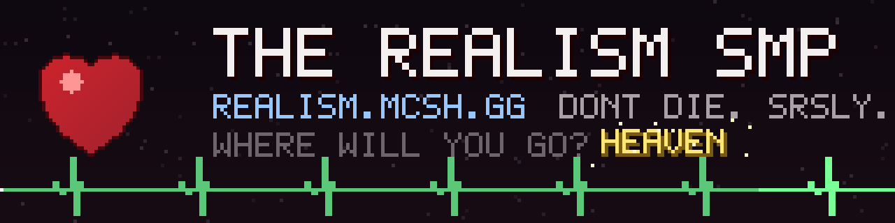

Realism
Real life in Minecraft. Thirst, sleep, blood, broken bones, hospitals, money, countries, cars, jobs... and when you die, you stay dead. 💀
bloodParticles = false.
What's inside
Your body
Thirst, sleep, stamina, torn muscles, broken legs and necks, burns and frostbite.
Blood
5 liters, bleeding, bandages, tourniquets, real blood types and blood bags.
Hospitals
Doctors, operating tables, surgery kits, defibrillators, ambulances, hospital buildings in the world.
The mind
Mood, friends, music, therapy, and dreams or nightmares while you sleep.
Computers
Build a PC part by part, with apps, games and retro-style operating systems.
Countries
Found a country, set taxes, ATMs, phones, signal towers and the law.
Eras
Start in year 0 and invent everything, in black and white, until colour TV exists.
Diseases
Radiation, flu, infections, food poisoning, and cancer with real treatment.
Daily life
Showers, toilets, toothbrushes, jobs with paydays, cars, roads and traffic lights.
Czech food
Svíčková, guláš, řízek, knedlíky... cooked on Grandma's Stove.
Judgment
No reviving. You're judged: heaven, hell or the dark. Lying counts too.
Config
Every rule can be turned on or off in the server config.
Get started
mods folder.Play on the SMP
realism.mcsh.gg 🌍 Don't die. Srsly.